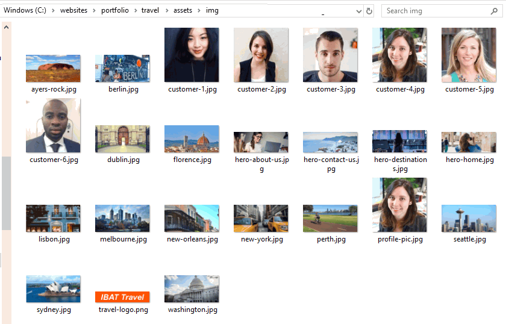
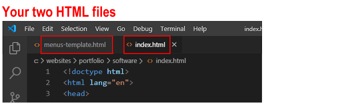
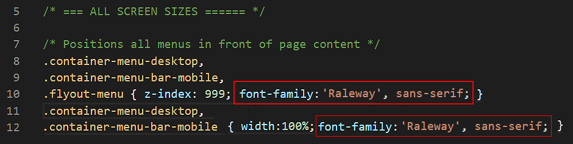
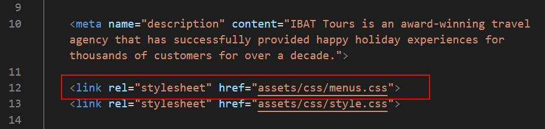
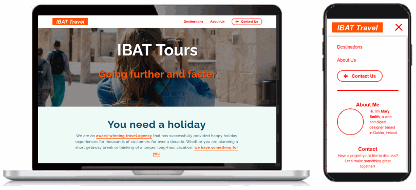
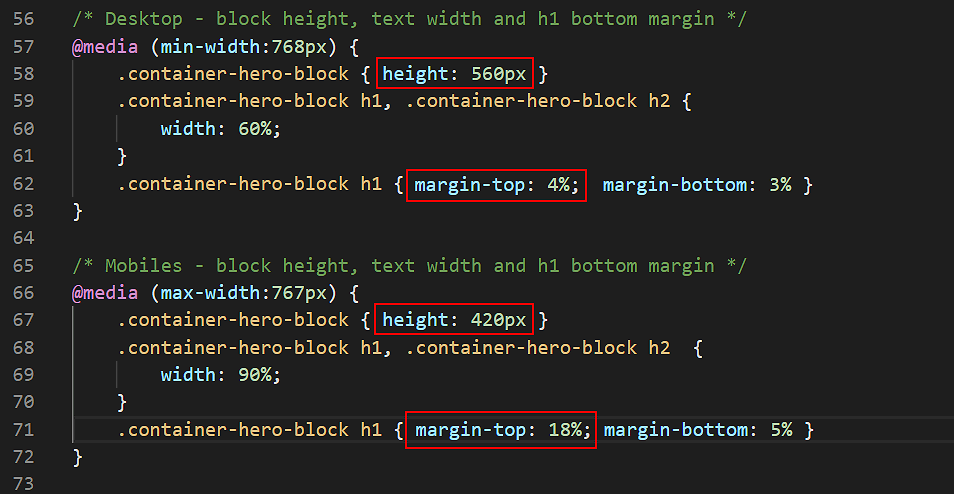
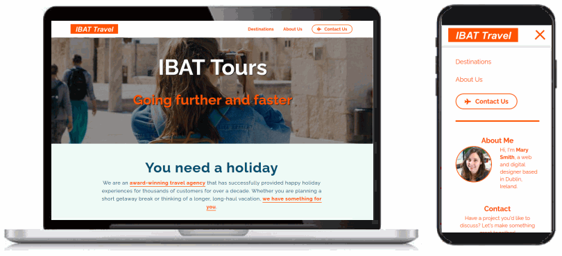
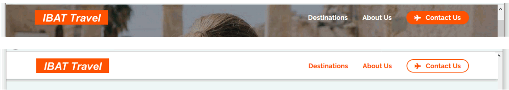
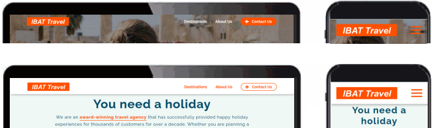

In this task you will use template content to add desktop and mobile menus to the ‘Travel Agency’ project you created earlier and to which you then added a contact form page and a footer.
You can display a finished version of the project web pages by clicking the image below.
Learning Goals
At the end of this Tutorial you will be able to:
Copy selected HTML with text content and JavaScript code from a template file to a project web page.
Link project web pages to a renamed copy of a template stylesheet.
Edit the copied HTML, CSS and JavaScript files as required.
Your first step is to download the image file for this project’s website logo.
Right-click the image below and, from the context menu displayed, choose Save Image As.
Download the image file to your websites/portfolio/travel/assets/img sub-folder.
If you want to include a profile image in your mobile flyout menu, download this square placeholder picture to your websites/portfolio/travel/assets/img sub-folder.
Your img sub-folder for this project will now look as shown below.

Working with your two HTML files
You will begin by working with two HTML files:
The template file you will copy from and
The web page you will copy to.
In Visual Studio Code, from your websites/templates folder, open the following HTML file;
menus-template.html
From your websites/portfolio/travel folder, open the web page named index.html.
If you have any other files open in Visual Studio Code, you may wish to close them.

This will help you to focus only on the two HTML files you will be working with.
Copying-and-pasting the menus HTML and JavaScript
Your next step is to copy content from the menus template file into your index.html web page.
In the menus-template.html file, select and copy the menus-related HTML blocks.
In your index.html web page, click just after the start of the opening <body> tag, and press the ENTER key a few times to open up some new lines of blank space.
Paste the copied HTML for the menus.
Switch back to the menus-template.html file, and select and copy the JavaScript code for the menus.
In your index.html web page, scroll down to near the end of the web page, to just before the closing </body> tag.
Press the ENTER key a few times to open up some new lines of blank space.
Paste the copied JavaScript code for the menus.
When finished, save your index.html web page.
You can close the menus-template.html file. You are now finished working with this template.
Working with the template CSS file
Your next set of tasks involves making a copy of the template stylesheet file, renaming it, and then linking the renamed copy to your index.html project web page. You will also make some changes to the copied and renamed stylesheet.
Copying and renaming the template CSS file
First, you will make a copy of the template stylesheet for menus.
In VS Code, from your websites/templates folder, open the following CSS file:
menus-template.css
From the File menu, choose the Save As command.
Save the template stylesheet with the name menus.css in the following folder:
websites/portfolio/travel/assets/css
This is the same folder that holds the style.css file for your ‘Travel’ project.
You can close the menus-template.css stylesheet. You are now finished with this template CSS file.
Removing browser resets from the new menus CSS file
Now you will delete the web browser resets from your copied and renamed stylesheet.
In VS Code, display the new menus.css stylesheet.
Delete everything in the == WEB BROWSER RESETS == block.
Save the menus.css stylesheet.
Updating the font-family for the menus
In your project style.css stylesheet, two Google Fonts are set for the four web pages of this project: ‘Raleway’ and ‘Roboto Slab’.
Because no font-family is yet set for the menus, the menu text will display in the web browser default of serif. This default font is difficult to read at the small font sizes used for menu options.
So let’s replace it for both desktop and mobile menus with the Google Font of Raleway instead.
Display the menus.css file.
Edit the following lines as shown below.

Save the menus.css file.
All text in both the desktop and mobile menus will now display in the ‘Raleway’ font.
Linking your web page to the new menus CSS file
Next, you will link the stylesheet you have just copied, renamed and updated to your project web page.
In VS Code, display your index.html web page.
Add a link to the new stylesheet in the <head> as shown below.

Save your index.html file.
Updating the menu logo and hyperlink
For both the desktop and mobile menus, you need to update the website logo and its surrounding hyperlink.
In your index.html web page, go to near the top of the web page, to just after the opening <body> tag.
Scroll down a few lines to the mobile menu block and copy-and-paste the new menu options from the desktop menu to here.
Save the index.html web page.
View view the result in your web browser for both desktop and mobile screen sizes. Verify that the menu options all work correctly when clicked/tapped.

Updating the hero block spacing
Because both the desktop/laptop and mobile parent containers are ‘sticky’, the menus remain fixed at the top of the screen as the user scrolls down through the web page.
This also means that the top 72px of whatever web page element immediately follows the parent menu containers is ‘hidden’ behind them.
So you need to make a few changes to the hero block: to its height and to the vertical positioning of its text content.
In VS Code, display the style.css file.
Edit the height of the container-hero class for desktop/laptop and mobile screens as shown below.
Also, add some margin spacing above the main <h1> heading.

Save your style.css file.
Updating the mobile menu content and hyperlinks
In the lower part of the mobile menu, under the <hr> horizontal rule line, you can include some text about yourself, an image and some hyperlinks.
If you wish to include a profile picture, the link to the placeholder image is as follows.
<imgsrc="assets/img/profile-pic.jpg"alt="Mary Smith, Web Designer">
If you wish to include an email address or social media hyperlinks, replace the template-provided details with your own. Delete any details in the template you do not want to include.
If you want to link your website’s Home page, the link should be as follows.
<ahref="../../index.html">Home</a>
If you want to link your website’s Portfolio page, the link should be as follows.
<ahref="../index.html">Portfolio</a>
And if you want to link your website’s Contact Form page, the link should be as follows.
<ahref="../../contact/index.html">Contact</a>
Save your index.html web page.
Updating the menu colours
In the menus-template.html file you copied-and-pasted into your index.html web page, the CSS class of menu-light is assigned to the desktop and mobile menus. As a result:
The text of the menu options is displayed in a red colour against a white background.
The text and background of the CTA button are also in the colours red and white.
Let’s replace this default colour of red with the orange colour of #ff5000 used elsewhere in the web page.
In VS Code, display the menus.css stylesheet.
On the Visual Studio Code menu, click the Edit menu and then click the Replace command.
A new search-and-replace dialog box appears at the top-right of the Visual Studio Code screen.
In the first field, enter red.
In the second, enter #ff5000.
Click the left icon for Replace. Do not click the right icon for Replace All.
One by one, replace every occurrence of the colour red with #ff5000 in your stylesheet.
(If you choose the Replace All option, Visual Studio Code will replace the letters ‘red’ inside words such as 'centered' that may be written in comments.)
Save the menus.css file.
In your web browser, the web page should look as shown below.

Adding the menu style-swapping effect
Your final step is to use some JavaScript code in the menus-template.html file you copied-and-pasted into your index.html web page to create the following effect:
When the user displays the top of the web page, either on desktop or mobile screens, the menu has a transparent background. The hero image appears directly behind the text hyperlinks. These hyperlinks are displayed in white text.
When the user scrolls down the web page, the transparent background is replaced by a solid white colour. And the colour of the text hyperlinks changes to deep pink.

Also, a horizontal border with a drop shadow effect appears under the menubar.
To achieve this effect, follow these steps.
In the index.html file, for both the container-menu-desktop and container-menu-bar-mobile containers, replace the class of menu-light with the menu-transparent class as shown below.
Save the index.html file, and view the result in your web browser at both desktop/laptop and mobile screen sizes.
Unfortunately, on desktop/laptop screens, the white coloured menu options are impossible to read against the light coloured page background.
Display the index.html web page in VS Code.
Scroll down to near the bottom of the web page, and remove the // characters from the beginning of the JavaScript code as shown below.
Save the index.html file.
In your web browser, the web page should look as shown below as you scroll down and back up the screen.
.

When the user scrolls down the web page:
The JavaScript code removes the menu-transparent class and replaces it with the menu-light class. It also adds the menu-drop-shadow class that places a drop shadow effect along the bottom border of the menu.
When the user scrolls back up the web page:
The JavaScript code removes both the menu-light and menu-drop-shadow classes, and replaces them with the original menu-transparent class.
Changing the colour of the hamburger icon
The hamburger icon, which is displayed only on mobile screens, is shown in the same orange colour as the menu options text whenever the menu has a transparent background.
To make the hamburger icon more visible against the background image, let’s change its colour from orange to white.
In VS Code, open the menus.css stylesheet.
Change the icon colour, which is created by the background-color property, to white (#fff).
Save the menus.css file. You can now close this stylesheet.
Updating the other three web pages
You need to apply the menu-related updates you have made to your index.html web page to the three other web pages in your 'Travel' project. Follow these steps.
In VS Code, display your index.html web page, and from the <head>, copy the link to the menus.css stylesheet.
Open your destinations.html, about-us.html and contact-us.html web pages.
Paste the CSS link into the <head> of those three web pages.
Return to your index.html file and copy all the menu-related content from the top of the web page.
Into the top of your destinations.html, about-us.html and contact-us.html pages, paste the menu-related content to just after the opening <body> tag.
Return to your index.html file and, from the bottom of the web page, copy all the JavaScript code for menus.
At the end of the destinations.html, about-us.html and contact-us.html web pages, to just before the closing </body> tag, paste the copied JavaScript code.
Save your destinations.html, about-us.html and contact-us.html web pages.
In your web browser, display the web pages and verify that the menu hyperlinks between the four pages all work correctly, both on desktop/laptop and mobile size screens.
That’s it. You have now completed your ‘Travel’ project.
Uploading your project to GitHub
The final step is to upload your project to GitHub.
All the files you have updated for this project are in the travel sub-folder of your websites/portfolio folder.
So the easiest option is simply to upload the entiretravel sub-folder to your account on GitHub.
If you are not already signed in to your GitHub account, sign in now.
On the left of your GitHub home page, click the name of the repository that holds your web pages.
On the next GitHub screen displayed, click the portfolio folder.
GitHub should now display your portfolio folder.
With the portfolio folder displayed on your GitHub screen, click the Add file button and, from the dropdown list displayed, choose the option Upload files.
In File/Windows Explorer on your computer, display your portfolio folder and then drag-and-drop the travel folder to the GitHub tab in your web browser.
After uploading the travel folder, scroll down to the bottom of the GitHub screen, enter a short message in the Commit changes box, click the Commit changes button, and wait for the upload to complete.
Your updated ‘Travel Agency’ web project is now published on GitHub at a web address similar to the following, where username is the username you have chosen for your GitHub account:


 Unfortunately, on desktop/laptop screens, the white coloured menu options are impossible to read against the light coloured page background.
Unfortunately, on desktop/laptop screens, the white coloured menu options are impossible to read against the light coloured page background.